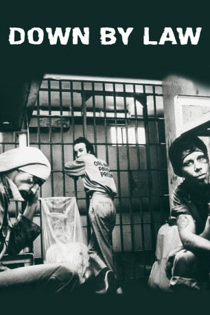

#7438 Down by Law *OmU*
 
 IMDB-Wertung: 7.8 / 10
IMDB-Wertung: 7.8 / 10  Metascore: 0
Metascore: 0 
Ein nicht sehr erfolgreicher Zuhälter und ein gescheiterter Radio-DJ landen in einer Gefängniszelle in Louisiana für Verbrechen, die sie nicht begangen haben. Schon nach kurzer Zeit wird ihnen klar, dass sie einander nicht ausstehen können. Da bekommen sie einen neuen Zellennachbarn: Der italienische Tourist Roberto bringt die beiden mit seinem Optimismus und dem kaum verständlichen Englisch schnell auf die Palme, behauptet aber auch, den Weg nach draußen zu kennen. Das einzige Problem: sollte die Flucht wirklich gelingen, wissen die drei nicht wohin...
Englisch mit dt. Untertiteln
Jahr: 1986
Dauer: 106 Minuten
FSK: 12
Land: USA Studio: Island PicturesTonspuren:
Untertitel: Deutsch,
Auflösung: 1080p (1920x1080) Größe: 8949 MB
Genre: Drama, Komödie, Krimi
Regisseur:  Jim Jarmusch
Jim Jarmusch
Drehbuch: Jim Jarmusch
Soundtrack:
Darsteller:
 Tom Waits als Zack
Tom Waits als Zack- John Lurie als Jack
 Roberto Benigni als Roberto
Roberto Benigni als Roberto Nicoletta Braschi als Nicoletta
Nicoletta Braschi als Nicoletta Ellen Barkin als Laurette
Ellen Barkin als Laurette- Vernel Bagneris als Preston
 David Dahlgren als Guard #1
David Dahlgren als Guard #1 Pruitt Taylor Vince als (scenes deleted
Pruitt Taylor Vince als (scenes deleted- Billie Neal als Bobbie
- Rockets Redglare als Gig
- Timothea als Julie
- L.C. Drane als L.C.
- Joy N. Houck Jr. als Detective Mandino
- Carrie Lindsoe als Young Girl
- Ralph Joseph als Detective
- Richard Boes als Detective
- Dave Petitjean als Cajun Detective
- Adam Cohen als Uniformed Cop
- Alan Kleinberg als Corpse
- Archie Sampier als Prisoner
- Alex Miller als Guard #2
- Eliott Keener als Guard #3
- Jay Hilliard als Guard #4
Datei: X:\1986\Down by Law OmU (1986, FSK12, 1920x1080).mkv seit 10.11.2017
Festplatte: HD 1980-1986
 Es gibt insgesamt 50 Filme in der Gruppe '1986'
Es gibt insgesamt 50 Filme in der Gruppe '1986'